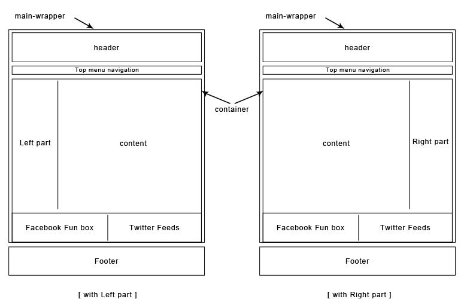
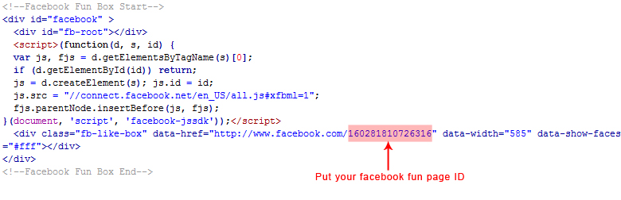
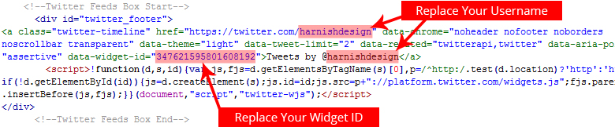
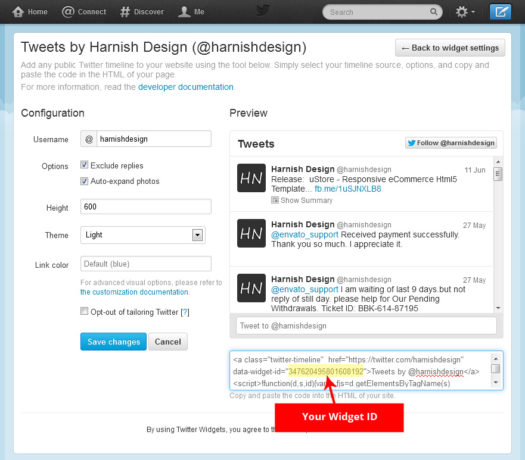

“Bigshop e-Commerce Html Template ” Documentation by “Harnish Design”
“Bigshop e-Commerce Html Template Documentation”
Created: 16/02/2013
By: Harnish Design
Web: www.harnishdesign.net
Thank You For purchasing Bigshop Html Template. Don’t forget to rate it
For Future Updates Follow Me @themeforest or @facebook or @twitter
Table of Contents
- Files
- HTML structure
- Nivo slider
- Facebook Fun Box
- Twiiter Feeds
- CSS in the template
- JavaScript in the template
1) Files - top
[css] |
This folder contains all style sheet files of the template. |
[js] |
This folder contains all javascript files of the template. |
[image] |
This folder contains all images of the template. |
[image] > [patterns] |
This folder contains 53 patterns for Main body background. |
[image] > [flags] |
This folder contains all language flags icon. |
Files |
HTML pages |
2) HTML structure - top
You can see template layouts with left part & right part from bottom image:
3) Nivo slider - top
To make Nivo Slider Work you'll need some HTML markup and JQuery code.


4) Facebook Fun Box - top
here is the code for the Facebook fun box:
Replace your ID for Facebook fun page according to below image:
5) Twiiter Feeds - top
here is the code for the Twiiter Feeds box:
Replace your twitter profile name for Twitter Feeds box according to below image:
How to Find Your Widget ID ? = See below image
6) CSS in the template - top
All CSS files must be included in the <head> section before the javascript files.
7) JavaScript in the template - top
This template uses several jQuery files, all of them are placed in "js" folder.
In "custom.js" you have all custom code, wich is well commented and ready to use and update.
End of documentation
Once again, Thank You so much for purchasing this template. If you have any questions relating to this template So send me
Email: harnishdesign@gmail.com otherwise comment our themeforest profile.
Harnish Design